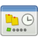
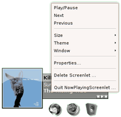
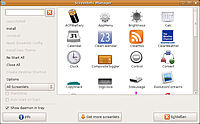
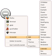
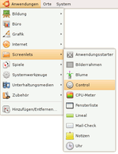
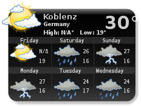

Screenlets
Dieser Artikel wurde für die folgenden Ubuntu-Versionen getestet:
Ubuntu 16.04 Xenial Xerus
Ubuntu 14.04 Trusty Tahr
Zum Verständnis dieses Artikels sind folgende Seiten hilfreich:

Screenlets  (Kurzform von "Screen Applets") sind kleine, in Python geschriebene Erweiterungen für den Desktop, welche als Miniprogramme z.B. einen Notizzettel, eine Wetteranzeige, einen E-Mail-Checker und vieles anderes mehr bereitstellen. Screenlets lassen sich unter jeder Desktop-Umgebung betreiben.
(Kurzform von "Screen Applets") sind kleine, in Python geschriebene Erweiterungen für den Desktop, welche als Miniprogramme z.B. einen Notizzettel, eine Wetteranzeige, einen E-Mail-Checker und vieles anderes mehr bereitstellen. Screenlets lassen sich unter jeder Desktop-Umgebung betreiben.
Allerdings sollte man beachten, dass Screenlets am besten mit einem Composite-Manager zur Geltung kommen (siehe Voraussetzungen). Es geht zwar auch ohne, aber dann sind Transparenzeffekte wie z.B. ein Schatten rund um ein Screenlet nicht möglich.
Eine Übersicht der Alternativen ist im Artikel Desklets zu finden.
Voraussetzungen¶
Als Composite-Manager kann man je nach Desktop-Umgebung zwischen mehreren Möglichkeiten wählen:
Unity: Compiz
GNOME 3 (integriert, siehe GNOME Shell)
KDE (integriert, siehe KWin/Arbeitsflächeneffekte)
LXDE: xcompmgr oder Compton. Alternativ kann man auch den Fenstermanager wechseln.
Xfce (integriert, siehe Xfce Composite-Effekte)
Hinweis:
Die Transparenz der Screenlets funktioniert nicht unter den Fenstermanagern Fluxbox und IceWM bzw. erst dann, wenn wie bei LXDE ein externes Programm zum Einsatz kommt.
Installation¶
 Das Programm ist bis einschließlich Ubuntu 14.04 in den offiziellen Paketquellen enthalten. Folgendes Paket ist zu installieren [1]:
Das Programm ist bis einschließlich Ubuntu 14.04 in den offiziellen Paketquellen enthalten. Folgendes Paket ist zu installieren [1]:
screenlets (universe)
 mit apturl
mit apturl
Paketliste zum Kopieren:
sudo apt-get install screenlets
sudo aptitude install screenlets
PPA¶
Für die Nutzung unter neueren Ubuntu-Versionen wird die Version 0.1.7 oder neuer benötigt, die über "Personal Packages Archiv" (PPA) [2] verfügbar ist.
Adresszeile zum Hinzufügen des PPAs:
ppa:screenlets/ppa
Hinweis!
Zusätzliche Fremdquellen können das System gefährden.
Ein PPA unterstützt nicht zwangsläufig alle Ubuntu-Versionen. Weitere Informationen sind der  PPA-Beschreibung des Eigentümers/Teams screenlets zu entnehmen.
PPA-Beschreibung des Eigentümers/Teams screenlets zu entnehmen.
Damit Pakete aus dem PPA genutzt werden können, müssen die Paketquellen neu eingelesen werden.
Nach dem Aktualisieren der Paketquellen erfolgt die Installation wie oben angegeben.
Verwendung¶

Nach der Installation ist das Programm screenlets bei Ubuntu-Varianten mit einem Anwendungsmenü unter "Zubehör -> Screenlets" zu finden. Nach dem Aufruf öffnet sich der "Screenlets Manager".
Mit dem "Screenlets Manager" können Screenlets installiert, gestartet und beendet werden. Ob der "Screenlets Manager" aktiv ist, lässt sich über ein kleines Symbol im Benachrichtigungsfeld erkennen. Nachdem man ein Screenlet gestartet hat, kann man dieses über das Kontextmenü ( ) des jeweiligen Screenlets konfigurieren. Es können beliebig viele Screenlets eines Typs gestartet werden, dies geschieht jedoch innerhalb einer Instanz – so lassen sie sich dann gemeinsam über das Kontextmenü beenden ("Quit -> Screenlet-Name -> Screenlet"). Alternativ können Screenlets aber auch einzeln gelöscht ("Delete Screenlet") werden.
) des jeweiligen Screenlets konfigurieren. Es können beliebig viele Screenlets eines Typs gestartet werden, dies geschieht jedoch innerhalb einer Instanz – so lassen sie sich dann gemeinsam über das Kontextmenü beenden ("Quit -> Screenlet-Name -> Screenlet"). Alternativ können Screenlets aber auch einzeln gelöscht ("Delete Screenlet") werden.
In der Voreinstellung befinden sich unkonfigurierte Screenlets "im Vordergrund" und überdecken alle anderen Anwendungen. Dies kann man aber leicht ändern: das Kontextmenü des Screenlets aufrufen, über "Fenster" den Haken "Im Vordergrund" entfernen und den Haken "Im Hintergrund" setzen.
Screenlets starten¶

Screenlets Manager¶
Zusätzlich zur Installation weiterer Screenlets kann der "Screenlets Manager" auch zum Starten installierter Screenlets genutzt werden. Unabhängig davon, wie die einzelnen Screenlets installiert wurden, überprüft der Manager die jeweiligen Ordner und ist damit immer auf dem aktuellen Stand. Über "Enable/Disable" kann das Programm auch anzeigen, welche Screenlets im Einsatz sind (auch wenn diese anderweitig gestartet wurden).
Darüber hinaus kann jedem gewünschten Screenlets die Einstellung "Auto start on login" hinzugefügt werden. Damit startet der "Screenlets Manager" die jeweiligen Screenlets automatisch. Das funktioniert allerdings nur, wenn auch der "Screenlets Manager" selbst im Autostart [3] vorhanden ist.

Control Screenlet¶
Um die einzelnen Screenlets unabhängig vom "Screenlets Manager" starten zu können, bringt das Programm auch ein eigenes "Control Screenlet" mit, das ebenfalls weitere Screenlets hinzufügen kann. Über das Kontextmenü () und "Screenlet -> Add" erreicht man alle installierten Screenlets (solche, die nicht systemweit verfügbar sind, werden unterhalb des Trennstrichs aufgelistet).
Über das Startmenü¶
Über einen Menüeditor kann sich jeder selbst ein solches Menü anlegen. Die notwendigen Startbefehle sind im folgenden Abschnitt beschrieben. Ein entsprechendes Symbol lässt sich meist im Ordner des installierten Screenlets finden.

Screenlets direkt starten¶
Im Gegensatz zu früheren Versionen benötigen Screenlets mittlerweile nicht mehr unbedingt den "Screenlets Manager". Dadurch können einzelne Screenlets wie jede andere Anwendung direkt und unabhängig voneinander gestartet werden. Dies hat u.a. den entscheidenden Vorteil, dass man auch für einzelne Screenlets Anwendungsstarter auf dem Desktop, im Panel oder im Menü anlegen kann.
Um ein Screenlet direkt zu starten bzw. in einen Programmstarter einzutragen, benötigt man den kompletten Pfad zum Screenlet, der davon abhängt, wie bzw. wo es installiert wurde. Bei einer systemweiten Installation z.B.:
/usr/local/share/screenlets/SCREENLET-NAME/NAMEScreenlet.py
bzw. falls man es im Homeverzeichnis gespeichert hat:
/home/<Benutzer>/.screenlets/SCREENLET-NAME/NAMEScreenlet.py
Für das Notizzettel-Screenlet dann also zum Beispiel:
/usr/local/share/screenlets/Notes/NotesScreenlet.py
Den jeweiligen Befehl kann man auch in den Autostart eintragen, um das gewünschte Screenlet beim Anmelden mitzuladen.
Screenlets ein-/ausblenden¶
Die Screenlets können standardmäßig mit F9 ein-/ausgeblendet werden. Dazu muss für Compiz aber das Paket compiz-fusion-plugins-extra installiert sein und im CompizConfig Einstellungs-Manager in der Kategorie Arbeitsfläche das Plug-in Widget-Ebene aktiviert sein.
compiz-fusion-plugins-extra
mit apturl
Paketliste zum Kopieren:
sudo apt-get install compiz-fusion-plugins-extra
sudo aptitude install compiz-fusion-plugins-extra
Spezielle Einstellung¶
Mit einem -Klick auf das Screenlet öffnet sich ein Kontextmenü, wo man u.a. die Größe und das Thema des Screenlets ändern. Hier eine kleine Übersicht.
| HAL9000 Screenlet |
Größe¶
Legt die Größe des Screenlets in Prozent zur vorgegebenen Größe fest.
Thema¶
Legt das Aussehen des Screenlets fest. Über das Allgemeine Screenlet-Menü können weitere Themen installiert werden.
Fenster¶
Sperren (verhindert das Verschieben des Screenlets)
Hafte am Desktop (das Screenlet wird auf allen virtuellen Desktops angezeigt)
Widget (das Screenlet wird wie ein Widget im Widget Layer von Compiz behandelt)
Im Vordergrund (das Screenlet ist immer sichtbar)
Im Hintergrund (das Screenlet ist nur sichtbar, wenn sich kein Fenster darüber befindet)
| Furius Moon Screenlet FuriusMoonlet-1.1.tar.gz  |
Eigenschaften¶
Öffnet das Einstellungsmenü des Screenlets, über das viele weitere Einstellungen vorgenommen werden können:
"Noch ein <Screenletname> hinzufügen" - Öffnet ein weiteres Screenlet dieses Typs.
"Dieses <Screenletname> löschen" - Löscht das Screenlet einschließlich seiner Einstellungen.
"Dieses <Screenletname> beenden" - Blendet das Screenlet aus. Es kann aber über das Allgemeine Screenlet-Menü wieder eingeblendet werden. Die Einstellung "Autostart beim Login" wird damit nicht aufgehoben.
"Alle <Screenletname> beenden" - Blendet alle Screenlets dieses Typs aus. Sie können aber über das Allgemeine Screenlet-Menü wieder eingeblendet werden. Die Einstellung "Autostart beim Login" wird damit nicht aufgehoben.
Weitere Screenlets installieren¶
Weitere interessante Screenlets - neben den mitgelieferten - findet man über die Webseite Gnome-look.org . Unter Umständen kann es wichtig sein, darauf zu achten, für welche Programmversion das Screenlet geschrieben wurde.
Speziell unter Ubuntu kann auch das oben genannte PPA zur Installation weiterer Screenlets genutzt werden. Alternativ steht ein Sammelpack zum Herunterladen zur Verfügung: Screenlets - individual widgets .
Im "Screenlets Manager" kann über den Schaltfläche "Install Screenlet" das heruntergeladene Archiv ausgewählt werden, welches dann im Verzeichnis ~/.screenlets/ installiert wird. Alternativ kann man das heruntergeladene Archiv auch manuell entpacken [4]:
für eine systemweite Nutzung mit Root-Rechten nach /usr/local/share/screenlets/SCREENLET-NAME/
als Benutzer in den Ordner ~/.screenlets/SCREENLET-NAME/
Problembehebung¶
|  |
| ClearWeather Screenlet |
Wetter-Anzeige¶
Um den Code für den gewünschten Ort zu finden:
man ruft z.B. die Übersicht Weather Location Codes/IDs for Germany
in einem Browser auf und sucht nach dem Ort, von dem man das Wetter wissen willliest den Code ab, der für Deutschland immer mit
GMXXbeginnt
Hinweis:
Bedingt durch Änderungen an der API von Weather.com funktioniert das Screenlet Clearweather in der Version 0.7.41 oder älter nicht mehr. Eine korrigierte Version ist im Forum zu finden.
Unity¶
Ab Ubuntu 13.04 wird das Symbol des Screenlet-Managers nicht mehr im Panel angezeigt. Siehe auch Traditionelle Applets.
Desktop anzeigen¶
Damit sich Screenlets bei der Funktion "Desktop anzeigen" nicht wie normale Fenster verhalten und verschwinden bzw. minimiert werden, muss die Datei __init__.py im Verzeichnis /usr/share/pyshared/screenlets/ in einem Editor [5] mit Root-Rechten bearbeitet werden. Dort wird folgende Zeile:
self.window.set_type_hint(gtk.gdk.WINDOW_TYPE_HINT_TOOLBAR)
in
self.window.set_type_hint(gtk.gdk.WINDOW_TYPE_HINT_DOCK)
geändert. Natürlich muss dann bei den Screenlets als Fenstermodus "im Hintergrund" eingestellt sein.
Hinweis:
Alternativ kann das Verhalten beim Einsatz von Compiz nach Installation des erweiterten CompizConfig Einstellungs-Managers auch ohne Quelltextänderungen konfiguriert werden. Hier entfernt man über
"System -> Einstellungen -> CompizConfig Einstellungs-Manager -> Allgemeine Optionen -> Allgemein"
den Haken bei "Programmleistenfenster ausblenden". In älteren Ubuntu-Versionen hieß diese Einstellung noch "Hide Skip Taskbar Window".
Links¶
ehemalige Projektseite - nicht mehr erreichbarScreenlets
auf LaunchpadScreenlets
auf Gnome-look.orgIndividual Screenlets
- PPA mit weiteren Screenlets
- Erstellt mit Inyoka
-
 2004 – 2017 ubuntuusers.de • Einige Rechte vorbehalten
2004 – 2017 ubuntuusers.de • Einige Rechte vorbehalten
Lizenz • Kontakt • Datenschutz • Impressum • Serverstatus -
Serverhousing gespendet von